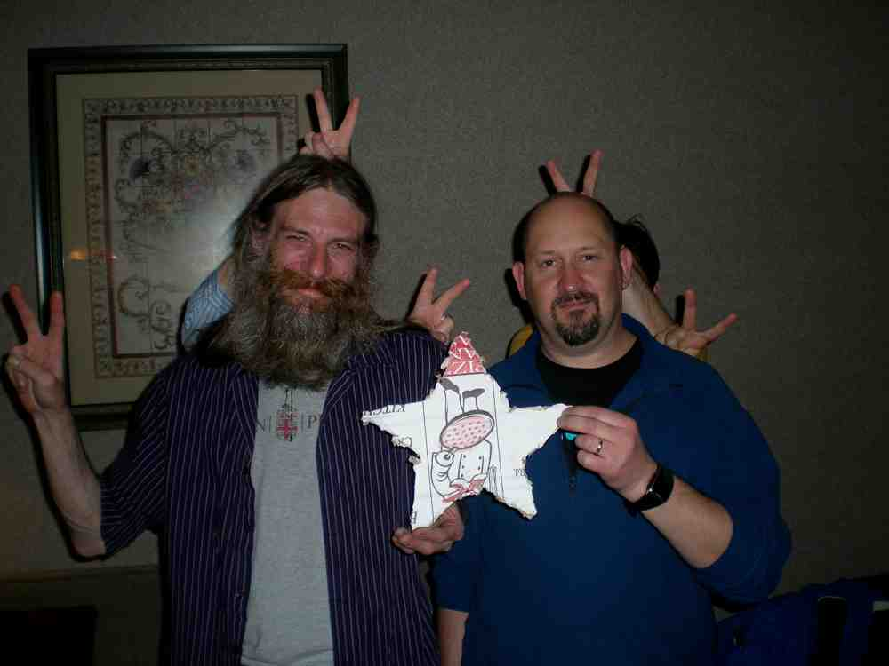
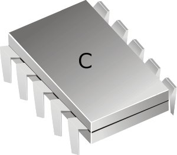

VStar, a multi-platform (Java-based), easy to use, open source (on SourceForge) variable star observation data visualisation and analysis tool. VStar has been under development since mid-2009 and is a collaboration with the AAVSO and participants of the Citizen Sky project.

An evolving library of PIC C code (on SourceForge).


Some experiments with ECMAScript (aka JavaScript or JScript) to accompany my article in the March 2000 Sky & Telescope magazine.

|

|

|
Here is a collection of useful LittleLisp
code fragments.
About ACE
What's new?
History - up to version 2.4
Documentation
Downloads
Mailing list